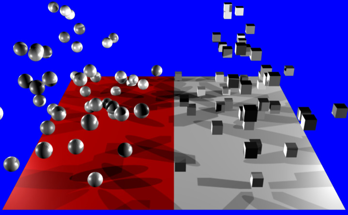

粒子实例修改器¶
When a Particle Instance Modifier is added to an object, that object will be used as a particle shape on an object which has a particle system associated with it. This means that to use this modifier you must also have another object which has a particle system on it, otherwise the Particle Instance Modifier will appear to do nothing.
{kind=link}
Particle system on left has no Particle Instance modified object associated with it. The one on the right is associated with cube shown by using a Particle Instance Modifier on the cube.
Options¶
{kind=link}
Particle Instance Modifier.
Because of the co-dependent way in which the Particle Instance Modifier is influenced by the underlying particle systems on other objects, some of the apparent effects generated by the Particle Instance Modifier can look and act vastly different, depending on the underlying settings of the particle systems it is associated with. This is worth taking account of if the Particle Instance Modifier settings do not appear to be giving the results expected, as it may indicate that the particle system settings may need altering rather than the Particle Instance Modifier settings.
- Object
- The Object field, associates this Particle Instance Modifier with another object (usually an object having a particle system...). This indicates that when the object named in this field emits particles, those particles will have the mesh shape of the current Particle Instance Modifier's mesh. If for example a sphere has a Particle Instance Modifier added to it, when the Object field of this modifier is filled in with the name of an object that emits particles, those particle will be sphere shaped. Even though most of the time the Object field will have the name of an object with a particle system, this is not mandatory, you can enter an object's name which does not have a particle system, and it will be accepted by the Object field, as there do not appear to be any checks made to make sure the object's name entered into this field is "valid".
- Particle System
The Particle System field is used to select which particle system number to apply the Particle Instance Modifier to, when the mesh which has the particle system on it has more than one of these. The Particle System field can have a value between (1 to 10). It is possible to select any of the ten particle system numbers, however, a check will not be made with the underlying particle emitting object specified previously in the Object field. If you select a particle system number which does not exist on the particle emitting object, then the particles on the emitting mesh will keep their normal particle shapes. No warning will be given that the chosen particle system does not exist on a particular particle emitting mesh.
As an example, below is a single plane mesh with two areas (the first area shown in red and the second in white), with different particle systems applied to each area. The left side using a Particle Instance Modifier which has the shape of a sphere and the right side having a Particle Instance Modifier which has the shape of a cube.
Render showing a single Plain mesh object assigned to two different vertex groups and each of those vertex groups is assigned a separate and independent particle system, with each particle system being assigned a different Particle Instance modifier. In the case shown the Particle Instance modifiers are a sphere and a cube. Example Blend file.
{kind=link}
Creation¶
- Normal
- When selected, the Normal button tells the Particle Instance Modifier to draw instances of itself wherever normal particle types are emitted from the underlying particle system. So if the current modifier is a sphere shape, when normal particles are emitted they will be spheres.
- Children
- When selected, the Children button tells the modifier to draw instances of itself wherever children/child particles are emitted/used on the underlying particle system. So if the current modifier is a sphere shape, when children/child particles are emitted they will be spheres.
- Size
- Scale the instanced objects by the particle size attribute. When this is disabled, all the copies appear the same size as the origin.
Display¶
- Unborn
- When selected, the Unborn button tells the modifier to draw instances of itself wherever unborn particles will be emitted/used on the underlying particle system. So if the current Particle Instance Modifier is a sphere shape, when unborn particles are present they will be spheres.
- Alive
- When selected, the Alive button tells the modifier to draw instances of itself wherever alive particles will be emitted/used on the underlying particle system. So if the current Particle Instance Modifier is a sphere shape, when alive particles are present they will be spheres.
- Dead
- When selected, the Dead button tells the modifier to draw instances of itself wherever dead particles will occur on the underlying particle system. So if the current Particle Instance Modifier is a sphere shape, when dead particles are present they will be spheres.
Using Paths¶
- Create Along Paths
- This option tries to make the underlying mesh object of the modifier deform its mesh shape in such a way as to try and match the path traveled by the particles/hair strands of the system associated with it. For example, below is a screen shot showing the path of a single keyed particle as it travels its way through each of the different way points (1 to 4) (target particle systems), when it reaches way point 4 the particle dies and ends its journey.
- Rotation Axis
Specify which pole axis to use for the rotation.
X, Y, Z
- Keep Shape
- Enabling this prevents the object from being deformed. It instead simply aligns to the end of the path at the object's center.
- Position
- Specify what percentage of the path the object fills. You could create a growing effect by animating this value over time.
- Random
- Scales the position value of each instance a random value.
{kind=link}
Keyed particle following way points (showing one particle). Example Blend file.
When a Particle Instance Modifier is added to a cylinder object and then associated with the way point particle system, the particle position is copied by the cylinder and placed at the particles position. So the mesh object follows the location of the particle. The cylinder does not alter any of its other properties when following the particle, only the cylinders location gets altered, shape and rotation do not get altered. See screenshot below:
{kind=link}
Keyed particle following way points showing a mesh object (Particle Instance Modifier) in place of the original particle. Example Blend file.
Both of the above examples had the Particle Instance Modifier Path button deactivated. When the Path button is activated the effect can be seen in the screenshot below:
{kind=link}
Keyed particle following way points showing a mesh object (Particle Instance Modifier) in place of the original particle, that is also being deformed to fit the travel path of the original particle. Example Blend file.
Instead of the cylinder location just following the position of the particle (and not altering its shape), the cylinder tries to fit its mesh to the shape of the path followed by the particle. The mesh geometry of the object which is trying to deform can have an impact on how well the deformation is carried out. In the case of the cylinder, it has many loop cuts along its length so that it can bend at those points to deform along the particle path. For example here is the same scene with the number of loop cuts along the length of the cylinder reduced, showing the effect on the deformation of the cylinder along the particle path.
The cylinder has most of its edge loops so most of the path deform is very regular apart from at the very end of the curve.
The cylinder has some of its edge loops removed so the path of the deform starts to become less regular.
Now the deform path is very rough.
At this point there are not any vertices to bend the cylinder to follow the path, and instead the cylinder just goes directly to the last way point 4.
{kind=link}
{kind=link}
{kind=link}
{kind=link}
Once all the extra edge loops around cylinder are removed so that there is only the top and bottom vertices left, meaning that the cylinder does not have enough geometry to bend, in that case it cannot follow the path of the particle, so it just goes from the start way point 1 to the ending way point 4. The Particle Instance Modifier Path button works for hair (strand) particles as well as with keyed particles. In this case the mesh of the Particle Instance Modifier will follow the length and profile of the hair strands paths. Below is a screenshot showing the effect of the Path button on hair:
{kind=link}
Strand with a Particle Instance Modifier associated with it and deforming the cylinder along the hair profile. Example Blend file.
Note
Strands when they are generated instantly die when created so for the Path button to be of any use, you must also have the Dead button activated. Otherwise the path a mesh took will not be visible!
See also